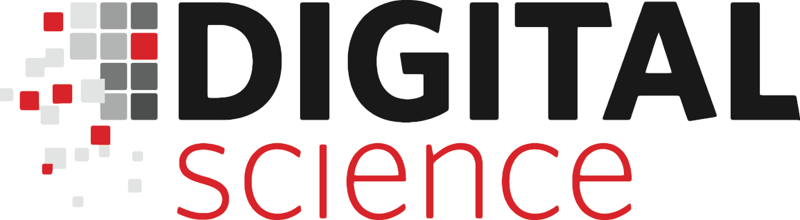

PeerJ is an Open Access publisher of scholarly articles. They aim to drive the costs of publishing down, while improving the overall publishing experience, and providing authors with a publication venue suitable for the 21st Century. Their tag line is: "Your Peers, Your Science. Academic Publishing Is Evolving"
Jason Hoyt from PeerJ is one of the principle organisers of the event, and PeerJ is generously providing backing for the event.
eLife is a unique collaboration between funders and practitioners of research to communicate influential discoveries in the life and biomedical sciences in the most effective way.
Ian Mulvany of eLife is one of the principle organisers of the event and eLife is generously providing backing for the event.
Amazon Web Services offers a complete set of infrastructure and application services that enable you to run virtually everything in the cloud: from enterprise applications and big data projects to social games and mobile apps. Both PeerJ and eLife run significant parts of their infrastructure on Amazon Web Services (we think they rock!)
Amazon Web Services are providing AWS credits for attendees of the event!
PLOS is a nonprofit publisher and advocacy organization. Their mission is to accelerate progress in science and medicine by leading a transformation in research communication.
PLOS is generously providing support for the event!

Skills Matter's mission is to promote continuous learning and innovation in software. More than 35,000 people get together at Skills Matter each year, everyone with the goal of improving themselves and our community. We welcomed 42,000 face-to-face visits to our talks, workshops and gatherings in the last 12 months and our SkillsCast videos were seen by several hundreds of thousands of passionate developers too
Skills Matter is helping generously with the venue, they are really excited to be part of making this event happen!

Digital Science are working to make research more efficient through better use of technology. Their team consists of UX/UI designers, computational linguists, data scientists and other top developers specialising in Ruby, JavaScript, Java, Clojure and Python. They are the real deal, and we are really happy to have them on board as a sponsor of this event.
Digital Science is generously providing support for the event!